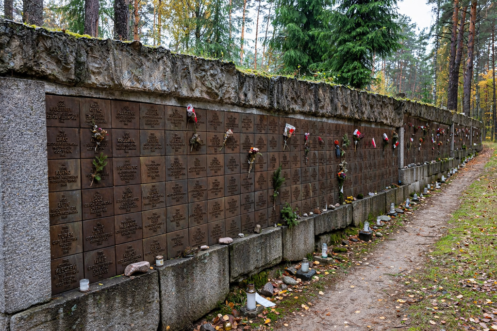

Chełmno extermination camp
| Chełmno extermination camp | |
|---|---|
 | |
| Location | Chełmno nad Nerem, occupied Poland |
| Operated | December 1941 – April 1943; June 1944 – January 1945 |
| Commandant | Herbert Lange; Hans Bothmann |
| Victims | At least 152,000 people, mostly Jews, plus Roma and others |
Chełmno (German: Kulmhof) was a Nazi extermination camp near the village of Chełmno nad Nerem in occupied Poland. It was the first camp established solely for mass murder, beginning operations on December 8, 1941 — before the Operation Reinhard camps at Bełżec, Sobibór, and Treblinka. At least 152,000 people, overwhelmingly Jews from the Łódź Ghetto and the surrounding Warthegau region, were murdered there, together with several thousand Roma, Polish prisoners, and Soviet POWs. Chełmno pioneered the use of gas vans, in which victims were asphyxiated by engine exhaust.
Operation
The camp consisted of a manor house in the village (the "Schloss") and a clearing in the Rzuchów forest several kilometres away. Victims were transported to the manor, told they would be bathed and sent to labour, and forced into the cargo compartment of a large van. As the van drove to the forest, exhaust was redirected into the sealed compartment, killing those inside. Bodies were buried in mass graves in the forest and later exhumed and burned in open-air ovens to destroy the evidence.
Phases and closure
Killing proceeded from December 1941 until April 1943, when the camp was dismantled and the manor blown up. Operations resumed in June 1944 to murder the remaining Jews of the Łódź Ghetto; the final victims were killed in mid-January 1945 as the Red Army approached, and the last Jewish prisoners were murdered before the SS fled. Only a handful of prisoners escaped, among them Mordechaï Podchlebnik and Szymon Srebrnik, whose testimony became crucial evidence.
Remembrance
A memorial, granite wall, and museum now stand at the forest site, and the grounds of the destroyed manor are marked in the village. The camp is a key subject of survivor testimony and of Claude Lanzmann's film Shoah, which features Srebrnik's return to Chełmno. Research on the site is supported by records at Yad Vashem and the United States Holocaust Memorial Museum.